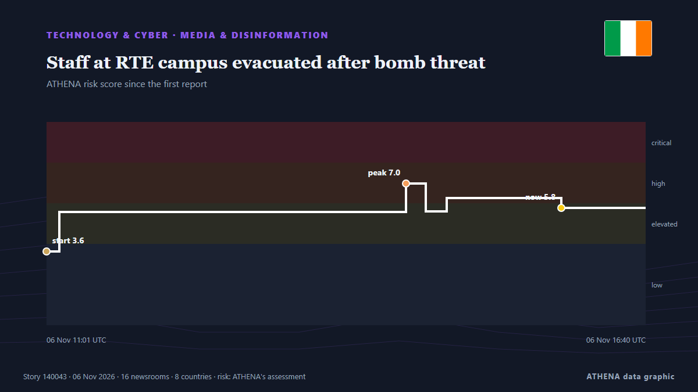

Médias et désinformation
SponsoriséPrésenté par  Cybernetics and Artificial Intelligence Lab Welcome to the Cybernetics and Artificial Intelligence Laboratory, established at the Department of Business Administration of the National and Kapodistrian University of Athens. The lab is headed by Professor Dimitrios Thomakos. The lab aims to do research that can be published in top venues. Our research uses tools and methods of Artificial Intelligence, and lies in the following areas: - Forecasting - Decision making - Cyber security - Finance We are always looking forward to collaborating with exceptional students!
Cybernetics and Artificial Intelligence Lab Welcome to the Cybernetics and Artificial Intelligence Laboratory, established at the Department of Business Administration of the National and Kapodistrian University of Athens. The lab is headed by Professor Dimitrios Thomakos. The lab aims to do research that can be published in top venues. Our research uses tools and methods of Artificial Intelligence, and lies in the following areas: - Forecasting - Decision making - Cyber security - Finance We are always looking forward to collaborating with exceptional students!
| 25 oct. | 0 |
|---|---|
| 26 oct. | 0 |
| 27 oct. | 0 |
| 28 oct. | 0 |
| 29 oct. | 0 |
| 30 oct. | 0 |
| 31 oct. | 0 |
| 1 nov. | 1 |
| 2 nov. | 1 |
| 3 nov. | 2 |
| 4 nov. | 5 |
| 5 nov. | 9 |
| 6 nov. | 4 |
| 7 nov. | 0 |
Les titres sont affichés en anglais, tels que publiés.

Staff at RTE campus evacuated after bomb threat
It comes after bomb threats were sent to airlines, including an Aer Lingus flight from Dublin, over recent days. de The Irish News (Belfast)
Federal Minister for Planning, Development and Special Initiatives, Ahsan Iqbal chairing a meeting of the Joint Committee on ICT Education Reforms.
Associated Press Of Pakistan Ahsan Iqbal calls for establishment of Pakistan Tourism Authority to promote tourism Federal Minister for Planning, Development and Special Initiatives, Professor Ahsan… de APP (Associated Press of Pakistan)
Fact check: UK trade with the US and taxes 100 years ago
Round-up of fact checks from the last few days compiled by Full Fact. de Evening Standard (London)
UK broadcaster Sky receives security threat amid wave of bomb scares across Europe
Sky, owned by US media company Comcast, says it is among several media organizations receiving security threats. de Anadolu Agency (English)
Instagram brings Edits to desktop to take on CapCut
The move puts Edits in more direct competition with ByteDance's CapCut, the video-editing app Meta sought to challenge when it launched Edits last year. de TechCrunch
Fate of Japanese ‘journalist’ detained in Russia depends on investigation results — MFA
Maria Zakharova specified that the investigation "is being conducted by the FSB in full compliance with Russian law" de TASS (English)
Ethiopia: Ethiopia Suspends the Reporter Indefinitely in Escalating Assault On Independent Media
[CPJ] Nairobi -- The Committee to Protect Journalists calls on Ethiopian authorities to immediately lift the indefinite suspension of The Reporter, one of the country's oldest independent newspapers. de AllAfrica
Apple spyware alerts reach German MPs and journalists in 99 countries
Germany’s cybersecurity agency has told lawmakers who got Apple’s spyware warnings to treat their iPhones as possibly compromised. de The Next Web
Pan-Africa University unveil media fellowship to reframe Niger Delta reporting
PIND, Pan-Atlantic University initiative seeks to strengthen evidence-based reporting, move beyond conflict narratives. de Premium Times
Army foils TTP infiltration attempt in Kurram, retaliates to 'unprovoked' Afghan firing: state media
Security sources say Afghan Taliban posts suffer heavy damage during Pakistani forces' retaliatory action. de Express Tribune
Disinformation threatens trust in election results: Researcher
Research has shown that disinformation is threatening trust in election results, and not just voter. de SABC News
Israel's detention of Abou Shhadeh 'a campaign to silence'
Israeli forces detained Palestinian journalist Abed Abu Shehadeh over an interview with Azmi Bishara, as threats against Arab political leaders intensified. de The New Arab
Russians launch propaganda Shahed drone to drop leaflets on Kyiv
A Russian propaganda Shahed drone carrying inflammatory leaflets with a phishing QR code has been shot down over Ukraine. de Ukrainska Pravda (English)
Wike defends high Abuja billboard rates, says ‘politics is expensive’
The Minister spoke to journalists during his monthly media chat in Port Harcourt on Thursday, following outcry by several opposition parties over access to communication media through which voters… de Channels TV
Egypt’s head coach Hossam Hassan banned from all broadcast platforms by media council
Egypt’s Supreme Council for Media Regulation (SCMR) has issued a decree banning national football team head coach Hossam Hassan from appearing across all media outlets governed by Press and Media… de Egypt Independent
Saudi Arabia extends $3B financing rollover to Pakistan
Riyadh provided facility to Islamabad in April after UAE withdrew $3.5B financing. de Anadolu Agency (English)
Colleges 'will need £2.5bn to maintain campuses suitable for teaching'
Colleges will need £2.5 billion of investment to deal with its creaking estate. de The Scotsman